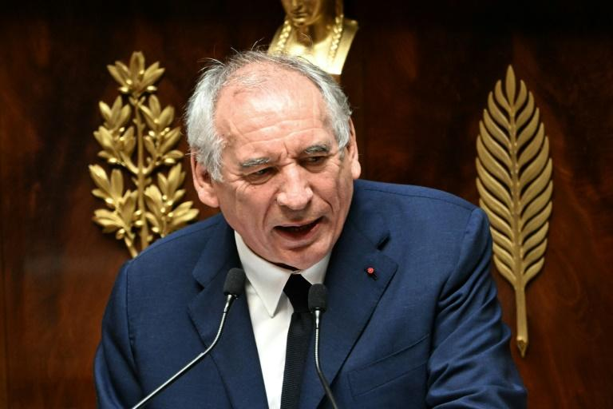

世界苦茶09月09日新闻 | 36条 | 柯文哲交保7000万元回家

柯文哲交保7000万元回家 | 耶路撒冷枪击致6人死亡 | 法国政府信任投票失败解散 | 阿根廷米莱遭遇指标性地方选举失利
苦茶数据
美元兑人民币：7.12（昨日7.13，前日7.12）
美元兑日元：147.39（昨日148.17，前日147.07）
上证指数：3815（昨日3818，前日3812）
标普500指数：6495（昨日6481，前日6502）
比特币：111543（昨日111342，前日110576）
布伦特原油：66.37（昨日66.30，前日64.50）
中国新闻
• 习向朝致贺巩固中朝 ：朝鲜媒体报道，中国国家主席习近平就朝鲜国庆77周年向朝鲜领导人金正恩致贺电，强调维护好、巩固好、发展好中朝关系，始终是中国党和政府坚定不移的战略方针，中国愿同朝鲜加强战略沟通，密切交往合作。据朝中社报道，金正恩收到习近平星期二发来的贺电。习近平在贺电中形容中朝两国是山水相连的传统友好邻邦，并说：“维护好、巩固好、发展好中朝关系始终是中国党和政府坚定不移的战略方针。”习近平也提及金正恩上周赴华出席中国抗战胜利纪念活动。习近平写道：“我同你再次会晤，共同规划了两党两国关系发展蓝图。中方愿同朝方加强战略沟通，密切交往合作，携手推进中朝友好和两国社会主义事业，为地区乃至世界的和平与发展作出更大贡献。”
• 监狱法增外籍权益 ：中国拟修订《监狱法》，增加规定确保监狱保障外国籍罪犯的合法权益。据中新网报道，《监狱法修订草案》星期一提请全国人大常委会二次审议。修订草案二审稿对有关外国籍罪犯刑罚执行和管理作出规定。修订草案二审稿增加规定，监狱保障外国籍罪犯的合法权益，保障外国籍罪犯在刑罚执行活动中得到公平公正对待。外国籍罪犯探视相关事宜依照国家有关规定办理。罪犯的移管依照国际刑事司法协助法等法律的规定办理。
• 多地违规发养老金 ：中国多地曝出违规发放养老金问题，涉及资金逾8000万元人民币，，其中包括向死亡或服刑等不符合条件人员发放补贴。据第一财经梳理发现，近期26个省份审计部门公开了2024年度省级预算执行及财政收支审计报告，其中七个省份指出，当地部分机构存在违规发放养老金等情况，涉资规模超过8000万元。江苏审计报告显示，部分机构因数据比对滞后、审核不严，违规发放养老保险待遇。七个市向不符合条件人员发放2574.64万元，并向774人重复发放养老金或丧葬费228.16万元。
• 第12批志愿军遗骸归国 ：中国官方通报，新一批中国志愿军在韩国的遗骸将于星期五回国。据中国央视新闻星期一引述中国退役军人事务部消息报道，中国退役军人事务部日前与韩国国防部就实施第12批在韩中国人民志愿军烈士遗骸交接工作达成一致，韩国将于星期五向中国移交30位在韩中国人民志愿军烈士遗骸及相关遗物。中韩双方遵循国际法和人道主义原则，从2014年至2024年已连续11次成功交接981位在韩中国人民志愿军烈士遗骸及相关遗物。
• 中国东盟自贸升级 ：中国商务部副部长鄢东说，中国将与亚细安保持沟通，推进各自国内签署批准程序，推动今年年底前正式签署中国-亚细安自贸区3.0版升级议定书。据中新社报道，鄢东星期一在新闻发布会上披露上述消息，并称中国将围绕九个达成双方共识的重点领域开展互利合作。他举例称，在数字经济领域，大力推动数字基础设施建设，推广移动电子支付，加快跨境电商发展，推动数字商业模式创新；积极利用人工智能、大数据等前沿数智技术赋能产业转型升级。在绿色领域，推动绿色贸易发展，加强与亚细安国家在新能源汽车、清洁能源等领域合作；促进绿色标准对接与合作，推动绿色供应链互联互通，共同探索绿色商机。
• 英商务部长将访华 ：英国媒体报道，英国新任商务部长凯尔本周将前往中国展开贸易会谈。英国《卫报》报道，凯尔预计星期三抵达中国，并将在中英经贸联委会会议上，与中国商务部长王文涛会面。这将是中英两国时隔七年再次举行经贸联委会会议，上一次是在2018年。
• 渤海实施为期一周军演 ：中国官方公布，渤海特定海域将从星期一中午起，执行长达一个星期的军事任务，禁止船只驶入。根据中国海事局官网星期六发布的航行警告，渤海自9月8日中午12时至下星期一中午12时在39-51N119-53E、39-51N120-37E、39-19N120-37E、39-19N119-53E诸点连线范围内执行军事任务，禁止驶入。这份航行警告并没有进一步说明军事任务的详情。
• 解放军连日绕台增多 ：九三阅兵后，中国大陆增派军机绕台。台湾国防部通报，中国大陆连续四天派遣双位数架次军机绕台。据台湾国防部官网消息，从星期一上午6时起的过去24小时，当局侦获27架次大陆军机，其中14架次逾越海峡中线进入北部、中部及西南空域，以及七艘大陆军舰、两艘公务船，持续在台海周边活动。自星期天上午6时起的之前24小时内，台国防部侦获21架次大陆军机，其中12架次逾越海峡中线，以及六艘大陆军舰、两艘公务船，持续在台海周边活动。
• 张雪峰称将巨额捐款 ：中国大陆网络名人张雪峰宣称，若大陆攻台，他“最起码”将捐1亿元人民币，并称枪声打响那天至少捐5000万元，相关言论在网络引发争议。网传视频显示，张雪峰在课堂演讲中称：“枪声打响那一天，我他X的至少捐5000万，我公司账上永远有这个钱。他X的打那天，老子直接打5000万进去，整体最起码捐一个亿。”他还说：“祖国统一，我们这一代人一定能成功，我始终坚信。”
亚太印太新闻
• 赖清德促陆对话 ：台湾总统赖清德在专访中表示，希望中国大陆不要轻忽台湾的善意，而是张开拳头，与台湾进行对话。赖清德在亲绿的台湾《自由时报》星期一刊发的专访中谈到大陆九三阅兵时说，终战80年，中国大陆应该体会到，过去的侵略者都已变成民主国家，享受民主、自由、人权的生活，也重视人民的福祉。反而过去受到侵略的国家，今天变成威权主义国家，变成民主阵营担心的对象，这没有必要，中国大陆应该检讨这件事。在被问及面对大陆的打压，两岸之间是否还有对话空间，赖清德以“你手上拿着槌子，你眼中看的都是钉子”这句话来表明，希望大陆不要轻忽或无视台湾的善意。
• 他信返泰现身廊曼 ：泰国前首相达信出国体检，赶在庭审宣判前一天乘专机返回泰国，现身曼谷机场。综合外电报道，达信乘坐的专机星期一降落在曼谷廊曼机场的私人飞机航站楼，相关区域已被机场方面部署路障和制服保安严密封锁。泰国媒体Khaosod在社媒平台X发布一张用长焦镜头拍摄的照片，显示达信现身廊曼机场，面带笑容。
• 萧美琴称和平非当然 ：台湾副总统萧美琴强调，和平从不是理所当然，政府将持续推动海巡下一阶段造船计划，不断提升舰队能量，强化台湾海域防线。据台湾总统府新闻稿消息，萧美琴星期一在基隆出席“1000吨级巡防舰第四艘CG1006花莲舰交船暨第五艘CG1007命名下水联合典礼”时说，政府持续扩充与现代化舰队，逐步形成一支更强、更现代化、更有韧性的海巡力量。萧美琴指出，国际情势风云变幻，俄乌战争、中东冲突都在提醒台湾，和平从来不是理所当然；台湾要确保稳定的经济与民生发展，就必须同时强化自身的安全与防卫。
• 海牙延后杜特尔特案 ：国际刑事法院无限期推迟针对菲律宾前总统杜特尔特涉嫌反人类罪的庭审，法官正在评估他是否具备出庭能力。法新社报道，杜特尔特原定9月23日就涉嫌犯下反人类罪指控出庭应讯，但国际刑事法院星期一宣布无限期推迟这场庭审，直到就杜特尔特是否适宜出庭受审作出判断。由三名法官组成的合议庭对围绕推迟决定出现分歧，其中一人持反对意见。
• 尼泊尔反封社媒骚乱 ：尼泊尔爆发大规模示威，抗议政府封禁社媒和贪污腐败。示威期间发生骚乱，已有14人死亡，另有数十人受伤。综合外电报道，尼泊尔首都加德满都星期一爆发大规模示威，数千名抗议者反对政府以平台未完成注册为由，封禁包括脸书在内的多家社交媒体。示威者中包括大量青年人。抗议期间，有示威者试图冲破警方路障进入议会大楼，并与警方发生冲突。警方发射催泪瓦斯和橡皮子弹，驱散人群。据尼泊尔国家媒体当天傍晚播报，骚乱已造成14人死亡。
• 柯文哲7000万交保 ：台湾民众党前主席柯文哲因涉京华城案被羁押禁见一年后，星期一以新台币7000万元交保。他强烈抨击京华城案是冤狱，两度严词谴责总统赖清德应反省为何让台湾四分五裂，强调自己绝不投降、绝不屈服。台湾总统府晚间回应表示，基于尊重司法程序，不会对司法侦办中的个案做任何评论，但也不接受并非事实的抹黑。台北地方检察署也严正驳斥，指柯文哲罪嫌重大，具保后的言论悖于事实，企图误导舆论、混淆视听，将尽速依法提起抗告。此间评论指出，大罢免惨败后，赖政府支持度重挫，让柯文哲交保有助转移焦点，且可分化在野的国民党和民众党的合作关系，甚至操作民众党现任主席黄国昌与柯文哲“两个太阳”的矛盾。
• 国民党主席选战将起 ：台湾媒体报道，国民党内解读，目前宣布参选党主席的人选难担重任，这一两天将有重量级人马宣布出战。台湾《自由时报》星期一报道，国民党主席选举将于10月18日举行，中常会8月27日通过将党主席选举登记领表时程顺延两周，自9月15日至9月19日。目前已表态参选国民党主席者，包括孙文学校总校长张亚中、立委罗智强、前立委郑丽文、彰化前县长卓伯源、国民党前副秘书长张雅屏、国民党中常委孙健萍、彰化县议长谢典林、前国大代表蔡志弘和律师李汉中。
• 印度武器出口跃升 ：印度与巴基斯坦今年5月爆发四天冲突，印度通过导弹拦截无人机等武器展示了新型作战能力，并希望借此推动国际市场对印度武器的需求。印度一直是世界顶级武器进口国，如今却决心转型为主要武器生产和出口国。2024至2025年，印度国防出口达到创纪录的28亿美元，虽然与成熟市场相比仍显薄弱，但较前一年增长12%，是10年前的34倍。印度国内国防产值也飙升至创纪录的180亿美元，五年内几乎翻了一番。
• 印尼换财长内阁改组 ：印度尼西亚政府改组内阁，免除财政部长慕燕妮的职务，并任命新财长。路透社报道，印尼政府星期一任命印尼存款保险公司总裁普尔巴亚，接替慕燕妮担任财长。这次内阁人事变动前，印尼刚发生为期两周的全国抗议和骚乱，示威者要求建立更公平税收体系。示威期间，慕燕妮的私邸曾遭暴徒闯入和劫掠。
• 日方驳斥中方制裁石平 ：日本内阁官房长官林芳正8日就中国当局制裁日参议员石平一事表示，“完全无法接受”中方单方面采取措施压制异议立场，从两国关系角度而言也“极其遗憾”。林芳正称“作为国民代表的国会议员的表达自由，是我国民主的根基，应当予以尊重”。日方已通过外交渠道要求中方立即撤回相关制裁。
科技新闻
• 美查疑APT41钓鱼电邮 ：知情人士称，美国当局正在调查一封据称来自一名共和党议员的假电邮，电邮含恶意软件，目的显然旨在让中国掌握特朗普政府与北京进行贸易谈判的内幕。《华尔街日报》星期天，这封邮件疑似由美国众议员莫勒纳尔于7月发给美国贸易团体、律师事务所和政府机构。网络分析师将电邮中的恶意软件追溯到一个名为APT41的黑客组织。APT41据信为中国情报部门工作。为美国众议院美国与中共竞争委员会主席的穆勒纳尔是北京的严厉批评者，该委员会专注于中美战略竞争，包括对美国国家安全的威胁。
• 英特尔高层大调整 ：英特尔周一宣布了一系列高层人事变动，其中包括产品主管米歇尔·约翰斯顿·霍尔特豪斯的离职。霍尔特豪斯已在英特尔工作逾30年，她将在未来几个月继续担任英特尔的战略顾问。英特尔周一还表示，凯沃克·凯奇安已加入公司，出任执行副总裁兼数据中心部门总经理。在其他变动中，英特尔宣布成立一个新的中央工程部门，由高级副总裁斯里尼瓦森·艾扬加尔领导。
• OpenAI助力AI长片 ：OpenAI希望证明，生成式人工智能制作电影可以比好莱坞更快、成本更低。这家公司正在为一部主要由AI制作的长篇动画电影提供工具和计算资源，该片预计将于明年在全球影院上映。“Critterz”讲述了一群森林生物在村庄受到一个陌生人打扰后踏上冒险之旅的故事，该片是OpenAI创意专家Chad Nelson的创意。现在，他已与伦敦和洛杉矶的制作公司合作，计划在五月的戛纳电影节上首映该电影的长篇版本。伦敦Vertigo Films的联合创始人James Richardson称，该团队正试图在约九个月内完成这部电影，而不是通常需要的三年时间。Vertigo正与Native Foreign共同制作这部电影，后者是一家专门将AI与传统视频制作工具结合使用的制片厂。
• 美国考虑向三星、海力士发放对华芯片供应年度许可： 美国正提议对向三星电子公司和SK海力士公司在华工厂的芯片制造物资出口实行年度审批制，这是一项旨在防止全球电子产业受到干扰的折中方案，此前特朗普政府撤销了拜登时期允许这两家企业更便捷获得此类设备运输的豁免权。据知情人士透露，美国商务部官员上周向韩国同行提出了 “厂区许可” 方案，用以取代这两家芯片制造商在上届政府领导下获得的无限期授权。知情人士说，特朗普团队的提议要求韩国两大企业每次必须为整年所需的受限设备、零部件和原材料向华盛顿提交申请，且需申报精确数量。
• 丰田自动织机公司开发两轮搬运机器人： 日本丰田自动织机公司9月8日宣布，公司开发出了能够在有作业人员的狭小空间内自主行动的两轮搬运机器人。已有两台在爱知县安城市的工厂运行，此举旨在减少作业所需人员。为实现小型化，机器人采用了两轮设计。万一碰到人就会当场停下来等，顾及了安全方面。当天模拟了作业现场并公开了机器人。在举起放在台子上的约三公斤的汽车零部件后，机器人一边保持平衡一边转向反方向，将零部件放到约一米外的台子上。一天往返约1200至1300次。以往作业人员每次搬运需用时3至5秒，导入机器人后，组装该产品的人员从两人减少为一人。
财经新闻
• 中国8月出口放缓 ：中国8月出口录得六个月来最低增速，同比只增长4.4%，表现不如市场预期；中国对美国出口同比跌幅也进一步扩大至33.1%。在华盛顿高关税及全球外需放缓双重压力下，受访分析师预计，北京将在扩内需和稳外贸政策上继续发力。中国海关总署星期一公布的外贸数据显示，8月出口总值同比增长4.4%至3218亿美元，增速较7月下降2.8个百分点，也低于路透社调查经济师预测的5%增幅。经济学人智库中国高级分析师徐天辰和东方金诚首席宏观分析师王青接受《联合早报》采访时分析，中国8月出口增速放缓主要受三大因素拖累：一是去年同期高基数效应；二是中美关税政策不确定性减弱，抢出口效应逐渐消退；三是对美出口降幅持续扩大。
• 比亚迪加速拓欧 ：在中国国内陷入激烈价格战之际，比亚迪正通过推出新车型和更多展厅来加强在欧洲的扩张。据彭博社报道，比亚迪执行副总裁李柯星期一在慕尼黑车展上表示，公司在与数百家当地供应商洽谈，并将在年底前于欧洲32个国家设有超过1000家门店。比亚迪在欧洲销售的车型已从两年前的六款增至13款。
• 中远或遭美港口费 ：根据汇丰银行的一份最新报告，中国远洋海运集团和子公司东方海外（国际）在2026财年可能面对总计21亿美元的美国港口费。美国计划对进入美国港口的中国船舶征收的新费用，将于2025年10月14日起生效，只有中国建造的小型船舶和短途航行船舶可免征港口费。新费用将影响中国船东、运营商以及中国建造的船舶。虽然美国方面还没作出最终宣布，汇丰星期一发布的报告作出预测。中国海运承运商将受到美国新港口费的严重打击。相比之下，对于非中国海运公司而言，影响将“微不足道”。
• 生猪价跌收入下挫 ：中国养猪业面临产能过剩价格频降之际，多家上市生猪企业8月生猪销售均价继续下滑，销售收入也减少。综合《证券时报》和澎湃新闻报道，包括中国三大上市猪企牧原股份、新希望和温氏股份在内的多家生猪养殖相关上市公司发布8月生猪销售情况。当中三大猪企销量同比环比均增长，同比增幅介于4.72%至37.88%，环比增幅介于2.56%至10.2%，月销量介于133.78万头至700.1万头。
• 日本二季GDP上修 ：日本内阁府星期一公布的二次统计报告将今年第二季度日本实际国内生产总值环比增幅上调为0.5%，按年率计算增幅为2.2%。新华社报道，这一结果超过此前民间机构的普遍预期。内阁府8月15日公布的初步统计结果显示，二季度日本实际GDP环比增长0.3%，按年率计算增幅为1.0%。具体来看，由于二次统计加入服务业的最新调查内容，与初步统计相比，占日本经济比重二分之一以上的个人消费环比增幅由此前的0.2%上调为0.4%。与此同时，由于服务业软件投资出现下滑，设备投资由环比增长1.3%下调至增长0.6%。
• 前八月中美贸易下滑 ：中国官方数据显示，今年前八个月，中美贸易总值为2.73万亿元人民币，下降13.5%。中国海关总署星期一公布的数据显示，今年前八个月，中国进出口总值29.57万亿元，同比增长3.5%。其中，中国与亚细安贸易总值为4.93万亿元，增长9.7%，占中国外贸总值的16.7%；中国与欧盟贸易总值为3.88万亿元，增长4.3%，占中国外贸总值的13.1%；中国与美国贸易总值为2.73万亿元，下降13.5%，占中国外贸总值的9.2%。
俄乌战争
• 金砖线上峰会在即 ：中俄两国元首将在星期一出席金砖国家领导人线上峰会。中国外交部星期天在官网宣布，应巴西总统卢拉邀请，中国国家主席习近平将于9月8日在北京以视频方式，出席金砖国家领导人线上峰会并发表讲话。俄罗斯克里姆林宫发言人佩斯科夫早前告诉俄国塔斯社，俄罗斯总统普京将出席这场线上峰会。
• 泽连斯基解释了他认为乌克兰的胜利是什么： “普京的目标是占领乌克兰。对他来说，这就是胜利。在他能做到之前，胜利就在我们这边。所以，对我们来说，生存下来就是胜利。因为我们带着我们的身份、我们的国家、我们的独立生存了下来。” 泽连斯基还表示，美国总统唐纳德·特朗普与俄罗斯领导人弗拉基米尔·普京在阿拉斯加的会晤已经满足了这位俄罗斯领导人的愿望。“乌克兰没有出席这次会晤很遗憾，因为我认为特朗普总统给了普京他想要的东西……他非常想与特朗普总统、与美国总统会面。我认为，我认为普京已经实现了这个愿望。” 这位乌克兰总统说道。 （翻评：不知是否是为了可能的领土妥协做准备，不过可能性不大。）
国际新闻
• 核查伊朗谈判迫近 ：国际原子能机构总干事格罗西说，与伊朗就全面恢复核查事宜的谈判时间所剩无几，希望数天内能谈妥。路透社报道，以色列和美国6月空袭伊朗核设施后，国际原子能机构便无法进入伊朗关键核设施。伊朗在袭击后通过法律，暂停与国际原子能机构合作，并规定所有核查活动必须经过最高国家安全委员会批准。目前国际原子能机构与伊朗正就全面恢复核查的具体方式进行磋商，但格罗西强调，这并不改变伊朗身为《不扩散核武器条约》缔约国，允许设施检查等核查措施的义务。
• 耶路撒冷枪击致6死 ：耶路撒冷郊区发生枪击，造成六人死亡，枪手已被击毙。哈马斯事后宣称，枪手是两名巴勒斯坦武装分子。综合路透社和新华社报道，耶路撒冷郊区一个路口星期一发生枪击案，截至当天傍晚已有六人遇难。以色列急救组织“红色大卫盾”说，，另有11人受伤，其中多人伤势严重。事发地点位于一个公交站附近。急救人员抵达现场时，受害者散倒在站点周边的路面和人行道上，部分伤者失去意识。
• 法政府信任投票失败 ：法国总理贝鲁领导的政府在国民议会（议会下院）举行的信任投票中未能过关，贝鲁将代表政府向总统马克龙递交辞呈。贝鲁是马克龙两年来任命的第四任总理。综合新华社和英国广播公司报道，星期一下午，贝鲁在国民议会发表关于法国公共债务情况的政策演说，并就此向国民议会寻求信任投票，最终获194票支持、364票反对。支持票主要来自贝鲁所倚靠的中间派议员及部分共和党右翼议员，反对票主要来自左翼和极右翼议员。按照相关法律，贝鲁领导的政府所获支持票数少于反对票数，未通过信任投票，必须辞职。
• 米莱伊在布宜诺斯艾利斯惨败后仍坚持原计划： 阿根廷总统哈维尔·米莱伊在布宜诺斯艾利斯省败给中左翼庇隆主义反对派后，誓言不会改变其自由市场经济计划。截至91%的选票统计完毕，庇隆主义反对派赢得了约47%的选票，而米莱伊领导的自由先锋党的得票率为34%。米莱伊表示，他的政党遭遇了明显的失败，他将进行“深刻的自我批评”，但他坚称，他不会偏离追求预算盈余的目标，也不会偏离政府的外汇和货币政策优先事项。 （翻评：10月阿根廷中期选举，布省的选举有指标性意义，米莱中期选举凶多吉少。）